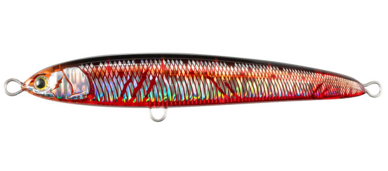
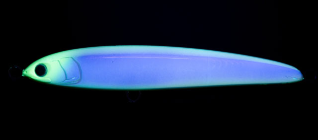
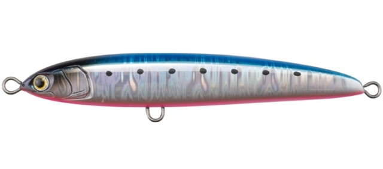
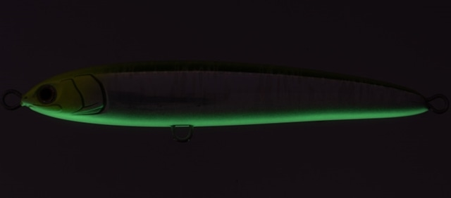
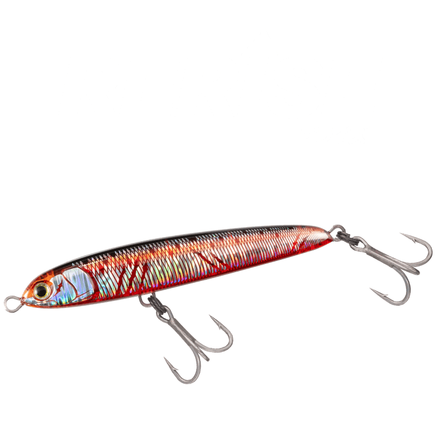
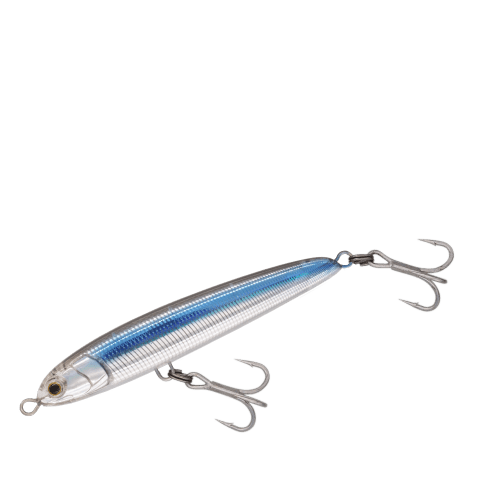

リライズ S150
リライズ S150はMaria（マリア）のシンキングペンシルです。
メタルジグやトップウォーターに反応が渋い時間をチャンスに変える、Mariaの新釣法「誘い上げ」のためのシンキングペンシルです。深場にいる追いの悪い低活性な青物に対して、ジグでは演出できないプラグならではのスローなアクションで、ナチュラルに捕食へと導きます。リライズ S150は「深く・流れがより強い沖磯ディープレンジ攻略のヘビーウェイトモデル」です。

画像出典:Maria公式HP
スペック
- メーカー
- Maria（マリア）
- タイプ
- シンキングペンシル（シンキング）
- 全長
- 150mm
- 重量
- 100g（フックレス）
- 沈下速度・想定水深
- 想定水深20〜40m・沈下速度約0.7秒/m
- フック
- トリプル#2/0（シングル#4/0）
- 適正タックル
- ヘビーショアジギングタックル
- ターゲット
- ヒラマサ・カンパチ・ブリなど
▼今すぐチェック

リライズ S150の特徴
ジグでは出せないスローな動きで、深場の青物を誘い上げる
-
揺らめきながらフォール
キャスト後は揺らめきながらボトム付近までフォール。フォール中もアピールを止めない。
-
S字スライドと平打ち
ロングジャークではタイトなS字スライドアクション、ショートジャークでは身もだえするような平打ちアクションを見せる。
-
プラグならではの操作感度
プラグ特有の浮力でジグより遅いスローなアクションができ、操作感度も高いので、レンジや潮流の変化もつかみやすい。
リライズ S150の使い方
キャストしてボトム付近まで沈め、ロングジャークやショートジャークで少しずつ浮かせながら任意のレンジまで「誘い上げ」、再びフォールさせるのを繰り返します。ジグのように速く動かすのではなく、ゆっくりとしたアクションで見せる時間を長く取るのがコツです。
リライズ S150の得意な状況
S130では攻めきれない深い水深（20〜40m）や速い潮流の沖磯で、ボトムまでしっかりルアーを届けたい時のヘビーウエイトモデルです。
朝マヅメの時合いが終わり、日が昇って青物が深場に落ちて反応が渋くなる日中が最大の出番です。公式では、朝マヅメはトップウォーターで表層、その後はディープをスピード感のあるアプローチ、反応が渋い日中は「誘い上げ」というローテーションが提案されています。
ワンポイント
フックとリングを付けると112g前後になります。平打ちのスローなショートジャーク（ワンピッチ）を10回ほど入れてから、S字のロングジャークで誘い上げるのが公式のおすすめです。
リライズのサイズの使い分け
| モデル | 全長・重さ | 特徴 |
|---|---|---|
| リライズ S105 | 105mm・40g | 堤防・サーフ対応のダウンサイズモデル |
| リライズ S130 | 130mm・70g | プラグ未開のディープレンジ攻略 |
| リライズ SS130 | 130mm・55g | 堤防・地磯対応のスローシンキングモデル |
| リライズ S150（この記事） | 150mm・100g（フックレス） | 深く・流れがより強い沖磯ディープレンジ攻略のヘビーウェイトモデル |
※数値は公式ページより。各サイズの記事もあわせてご覧ください。
オススメカラー
リライズ S150のカラーから4色を紹介します。

002 血みどろ弱って血のにじんだベイトをイメージした赤系。日中の低活性時や晴れ間に。

043 アオダイディープ深場のベイトをイメージしたカラー。ディープレンジの誘い上げに。

003 ブルピンイワシメタルジグでも定番のブルピン。高活性の青物へのアピールに。

011 ライムチャートグローライムチャートにグローを組み合わせた強アピールカラー。深場や濁りに。
画像出典:Maria公式HP
リライズ S150に似ているルアー
-

リライズ SS130 マリア 詳細はこちら＞同じリライズの130mmモデル。堤防・地磯対応のスローシンキングモデル。
-

リライズ S130 マリア 詳細はこちら＞同じリライズの130mmモデル。プラグ未開のディープレンジ攻略。
-
 サウザーS60
マリア
詳細はこちら＞
サウザーS60
マリア
詳細はこちら＞
同じマリアのジャーキング特化型シンキングペンシル。浅場でジャーク＆フォールしたい時に。